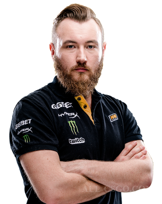
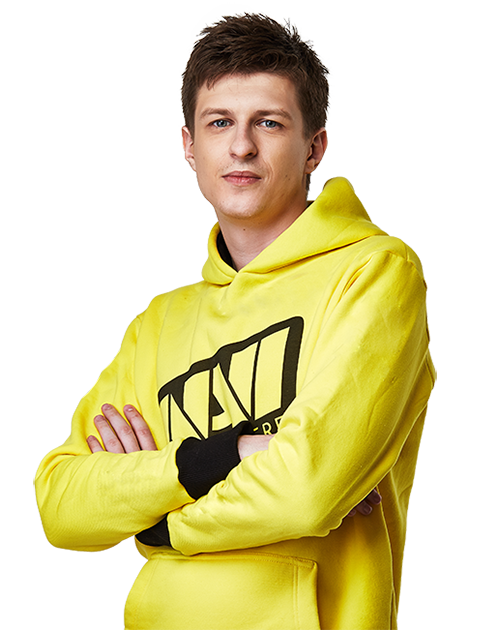

В 2009 году Влад Хаврак («МАВР») создаёт команду Arbalet.UA, состоящую из украинских игроков в Counter-Strike 1.6, выступавших ранее за команды KerchNET и Pro100. В состав команды вошли харьковчане Даниил Тесленко («Zeus») и Иван Сухарев («Edward»), киевлянин Сергей Ищук («starix»), Арсений Триноженко («ceh9») из Львова и Егор Маркелов («markeloff») из Днепропетровска. Менеджером команды стал Александр Кохановский («ZeroGravity») из Киева. После победы в турнире Arbalet Cup Asia 2010, на котором команда Арбалета выступала под названием «Na`Vi», проводится конкурс на лучшее название команды, в результате чего коллектив переименовывается в финальное название «Natus Vincere» (лат. рожденные побеждать), сохранив клантег «Na`Vi»
|
Данил Тесленко, 08.10.1988 (30 лет) Украина Профессиональный игрок в CS:GO. Чемпион турнира Major (в составе Gambit Esports) в 2017 году. Превосходные лидерские качества и сильная игровая мораль - отличительные черты Даниила. Zeus за свою долгую карьеру выступал за многие коллективы, включая pro100, Virtus.pro, Arbalet.UA и Natus Vincere, в составе которых и перешел в новую дисциплину CS:GO. В последние годы стал медийным лицом - Zeus записываем множество обучающих видео, а также ролики с ЛАН-турниров. Открыл свою "киберспортивную школу". Являлся капитаном команды Natus Vincere. Многократный чемпион мира в составе "Рождённых побеждать". |
|
Иоанн Сухарев, 28.12.1988 (30 лет) Украина Иван по праву считается одним из сильнейших индивидуальных игроков мира. Проводя детство в компьютерных клубах, Edward всё больше понимал, что хочет связать свою жизнь именно с киберспортом. Свою профессиональную карьеру он начал еще в Counter-Strike 1.6 играя за такие команды, как Virtus.pro и Natus Vincere. Украинская команда Na'Vi, которая была сформирована в декабре 2009 года оказалась наиболее стабильной. Её состав не менялся до 2013 года Edward дважды становился чемпионом мира по версиям ESWC и WCG. В ноябре 2012 года команда перешла на CS:GO. |
 |
|  |
Сергей Ищук, 14.12.1987 (31 год) Украина Сергей отличается своей игровой стабильностью и невероятным игровым чутьём. Он является многократным чемпионом мира по Counter-Strike 1.6 в составе Natus Vincere, ранее выступал за Arbalet.UA, KerchNET и A-Gaming. |
|
Арсений Триноженко, 03.01.1989 (30 лет) Украина Арсений является одним из лучших игроков Украины, выступал за многие топовые коллективы этой страны, включая Natus Vincere, KerchNET, Arbalet.UA, A-Gaming и pro100. Обладает сильными морально-волевыми качествами, что нередко играет на руку его команды на LAN-турнирах. В начале декабря 2013 года Арсений решил закончить свою карьеру профессионального игрока и занялся ведением видеоблогов для команды Na'Vi. |
|
Егор Маркелов, 12.02.1988 (31 год) Украина Карьера markeloff'a началась с Counter-Strike 1.6. Больше всего Егор известен по игре за украинскую команду Natus Vincere, в составе которой он пробыл с 2009 года по 2013, а также завоевал множество наград на различных турнирах. В 2012 году они всем коллективом «рождённых побеждать», как и многие другие игроки в мире, перешли на Counter-Strike: Global Offensive. До Na`Vi Егор выступал в CS 1.6 за такие команды, как Amazing Gaming, DTS Gaming, Arbalet UA и HellRaisers. |